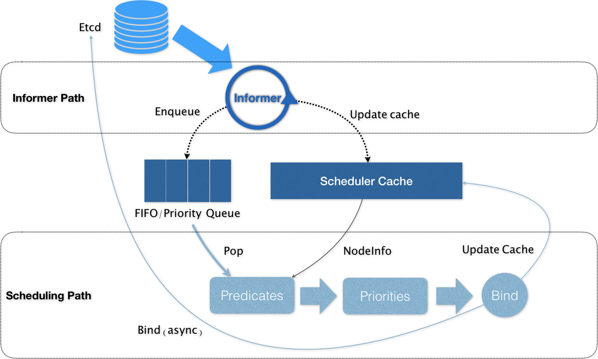
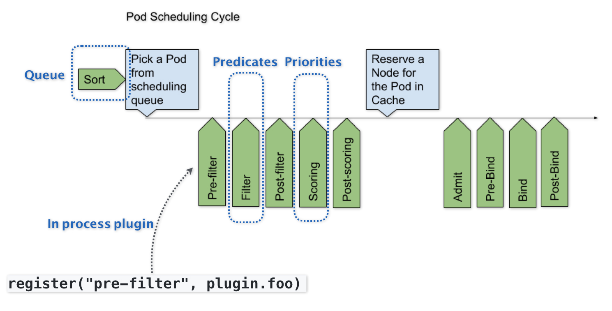

- 00 开篇词 打通“容器技术”的任督二脉.md.html
- 01 预习篇 · 小鲸鱼大事记（一）：初出茅庐.md.html
- 02 预习篇 · 小鲸鱼大事记（二）：崭露头角.md.html
- 03 预习篇 · 小鲸鱼大事记（三）：群雄并起.md.html
- 04 预习篇 · 小鲸鱼大事记（四）：尘埃落定.md.html
- 05 白话容器基础（一）：从进程说开去.md.html
- 06 白话容器基础（二）：隔离与限制.md.html
- 07 白话容器基础（三）：深入理解容器镜像.md.html
- 08 白话容器基础（四）：重新认识Docker容器.md.html
- 09 从容器到容器云：谈谈Kubernetes的本质.md.html
- 10 Kubernetes一键部署利器：kubeadm.md.html
- 11 从0到1：搭建一个完整的Kubernetes集群.md.html
- 12 牛刀小试：我的第一个容器化应用.md.html
- 13 为什么我们需要Pod？.md.html
- 14 深入解析Pod对象（一）：基本概念.md.html
- 15 深入解析Pod对象（二）：使用进阶.md.html
- 16 编排其实很简单：谈谈“控制器”模型.md.html
- 17 经典PaaS的记忆：作业副本与水平扩展.md.html
- 18 深入理解StatefulSet（一）：拓扑状态.md.html
- 19 深入理解StatefulSet（二）：存储状态.md.html
- 20 深入理解StatefulSet（三）：有状态应用实践.md.html
- 21 容器化守护进程的意义：DaemonSet.md.html
- 22 撬动离线业务：Job与CronJob.md.html
- 23 声明式API与Kubernetes编程范式.md.html
- 24 深入解析声明式API（一）：API对象的奥秘.md.html
- 25 深入解析声明式API（二）：编写自定义控制器.md.html
- 26 基于角色的权限控制：RBAC.md.html
- 27 聪明的微创新：Operator工作原理解读.md.html
- 28 PV、PVC、StorageClass，这些到底在说啥？.md.html
- 29 PV、PVC体系是不是多此一举？从本地持久化卷谈起.md.html
- 30 编写自己的存储插件：FlexVolume与CSI.md.html
- 31 容器存储实践：CSI插件编写指南.md.html
- 32 浅谈容器网络.md.html
- 33 深入解析容器跨主机网络.md.html
- 34 Kubernetes网络模型与CNI网络插件.md.html
- 35 解读Kubernetes三层网络方案.md.html
- 36 为什么说Kubernetes只有soft multi-tenancy？.md.html
- 37 找到容器不容易：Service、DNS与服务发现.md.html
- 38 从外界连通Service与Service调试“三板斧”.md.html
- 39 谈谈Service与Ingress.md.html
- 40 Kubernetes的资源模型与资源管理.md.html
- 41 十字路口上的Kubernetes默认调度器.md.html
- 42 Kubernetes默认调度器调度策略解析.md.html
- 43 Kubernetes默认调度器的优先级与抢占机制.md.html
- 44 Kubernetes GPU管理与Device Plugin机制.md.html
- 45 幕后英雄：SIG-Node与CRI.md.html
- 46 解读 CRI 与 容器运行时.md.html
- 47 绝不仅仅是安全：Kata Containers 与 gVisor.md.html
- 48 Prometheus、Metrics Server与Kubernetes监控体系.md.html
- 49 Custom Metrics_ 让Auto Scaling不再“食之无味”.md.html
- 50 让日志无处可逃：容器日志收集与管理.md.html
- 51 谈谈Kubernetes开源社区和未来走向.md.html
- 52 答疑：在问题中解决问题，在思考中产生思考.md.html
- 特别放送 2019 年，容器技术生态会发生些什么？.md.html
- 特别放送 基于 Kubernetes 的云原生应用管理，到底应该怎么做？.md.html
- 结束语 Kubernetes：赢开发者赢天下.md.html
- 捐赠
41 十字路口上的Kubernetes默认调度器
你好，我是张磊。今天我和你分享的主题是：十字路口上的Kubernetes默认调度器。
在上一篇文章中，我主要为你介绍了Kubernetes里关于资源模型和资源管理的设计方法。而在今天这篇文章中，我就来为你介绍一下Kubernetes的默认调度器（default scheduler）。
在Kubernetes项目中，默认调度器的主要职责，就是为一个新创建出来的Pod，寻找一个最合适的节点（Node）。
而这里“最合适”的含义，包括两层：
从集群所有的节点中，根据调度算法挑选出所有可以运行该Pod的节点；
从第一步的结果中，再根据调度算法挑选一个最符合条件的节点作为最终结果。
所以在具体的调度流程中，默认调度器会首先调用一组叫作Predicate的调度算法，来检查每个Node。然后，再调用一组叫作Priority的调度算法，来给上一步得到的结果里的每个Node打分。最终的调度结果，就是得分最高的那个Node。
而我在前面的文章中曾经介绍过，调度器对一个Pod调度成功，实际上就是将它的spec.nodeName字段填上调度结果的节点名字。
备注：这里你可以再回顾下第14篇文章《深入解析Pod对象（一）：基本概念》中的相关内容。
在Kubernetes中，上述调度机制的工作原理，可以用如下所示的一幅示意图来表示。

可以看到，Kubernetes的调度器的核心，实际上就是两个相互独立的控制循环。
其中，第一个控制循环，我们可以称之为Informer Path。它的主要目的，是启动一系列Informer，用来监听（Watch）Etcd中Pod、Node、Service等与调度相关的API对象的变化。比如，当一个待调度Pod（即：它的nodeName字段是空的）被创建出来之后，调度器就会通过Pod Informer的Handler，将这个待调度Pod添加进调度队列。
在默认情况下，Kubernetes的调度队列是一个PriorityQueue（优先级队列），并且当某些集群信息发生变化的时候，调度器还会对调度队列里的内容进行一些特殊操作。这里的设计，主要是出于调度优先级和抢占的考虑，我会在后面的文章中再详细介绍这部分内容。
此外，Kubernetes的默认调度器还要负责对调度器缓存（即：scheduler cache）进行更新。事实上，Kubernetes 调度部分进行性能优化的一个最根本原则，就是尽最大可能将集群信息Cache化，以便从根本上提高Predicate和Priority调度算法的执行效率。
而第二个控制循环，是调度器负责Pod调度的主循环，我们可以称之为Scheduling Path。
Scheduling Path的主要逻辑，就是不断地从调度队列里出队一个Pod。然后，调用Predicates算法进行“过滤”。这一步“过滤”得到的一组Node，就是所有可以运行这个Pod的宿主机列表。当然，Predicates算法需要的Node信息，都是从Scheduler Cache里直接拿到的，这是调度器保证算法执行效率的主要手段之一。
接下来，调度器就会再调用Priorities算法为上述列表里的Node打分，分数从0到10。得分最高的Node，就会作为这次调度的结果。
调度算法执行完成后，调度器就需要将Pod对象的nodeName字段的值，修改为上述Node的名字。这个步骤在Kubernetes里面被称作Bind。
但是，为了不在关键调度路径里远程访问APIServer，Kubernetes的默认调度器在Bind阶段，只会更新Scheduler Cache里的Pod和Node的信息。这种基于“乐观”假设的API对象更新方式，在Kubernetes里被称作Assume。
Assume之后，调度器才会创建一个Goroutine来异步地向APIServer发起更新Pod的请求，来真正完成 Bind 操作。如果这次异步的Bind过程失败了，其实也没有太大关系，等Scheduler Cache同步之后一切就会恢复正常。
当然，正是由于上述Kubernetes调度器的“乐观”绑定的设计，当一个新的Pod完成调度需要在某个节点上运行起来之前，该节点上的kubelet还会通过一个叫作Admit的操作来再次验证该Pod是否确实能够运行在该节点上。这一步Admit操作，实际上就是把一组叫作GeneralPredicates的、最基本的调度算法，比如：“资源是否可用”“端口是否冲突”等再执行一遍，作为 kubelet 端的二次确认。
备注：关于Kubernetes默认调度器的调度算法，我会在下一篇文章里为你讲解。
除了上述的“Cache化”和“乐观绑定”，Kubernetes默认调度器还有一个重要的设计，那就是“无锁化”。
在Scheduling Path上，调度器会启动多个Goroutine以节点为粒度并发执行Predicates算法，从而提高这一阶段的执行效率。而与之类似的，Priorities算法也会以MapReduce的方式并行计算然后再进行汇总。而在这些所有需要并发的路径上，调度器会避免设置任何全局的竞争资源，从而免去了使用锁进行同步带来的巨大的性能损耗。
所以，在这种思想的指导下，如果你再去查看一下前面的调度器原理图，你就会发现，Kubernetes调度器只有对调度队列和Scheduler Cache进行操作时，才需要加锁。而这两部分操作，都不在Scheduling Path的算法执行路径上。
当然，Kubernetes调度器的上述设计思想，也是在集群规模不断增长的演进过程中逐步实现的。尤其是 “Cache化”，这个变化其实是最近几年Kubernetes调度器性能得以提升的一个关键演化。
不过，随着Kubernetes项目发展到今天，它的默认调度器也已经来到了一个关键的十字路口。事实上，Kubernetes现今发展的主旋律，是整个开源项目的“民主化”。也就是说，Kubernetes下一步发展的方向，是组件的轻量化、接口化和插件化。所以，我们才有了CRI、CNI、CSI、CRD、Aggregated APIServer、Initializer、Device Plugin等各个层级的可扩展能力。可是，默认调度器，却成了Kubernetes项目里最后一个没有对外暴露出良好定义过的、可扩展接口的组件。
当然，这是有一定的历史原因的。在过去几年，Kubernetes发展的重点，都是以功能性需求的实现和完善为核心。在这个过程中，它的很多决策，还是以优先服务公有云的需求为主，而性能和规模则居于相对次要的位置。
而现在，随着Kubernetes项目逐步趋于稳定，越来越多的用户开始把Kubernetes用在规模更大、业务更加复杂的私有集群当中。很多以前的Mesos用户，也开始尝试使用Kubernetes来替代其原有架构。在这些场景下，对默认调度器进行扩展和重新实现，就成了社区对Kubernetes项目最主要的一个诉求。
所以，Kubernetes的默认调度器，是目前这个项目里为数不多的、正在经历大量重构的核心组件之一。这些正在进行的重构的目的，一方面是将默认调度器里大量的“技术债”清理干净；另一方面，就是为默认调度器的可扩展性设计进行铺垫。
而Kubernetes默认调度器的可扩展性设计，可以用如下所示的一幅示意图来描述：- 
可以看到，默认调度器的可扩展机制，在Kubernetes里面叫作Scheduler Framework。顾名思义，这个设计的主要目的，就是在调度器生命周期的各个关键点上，为用户暴露出可以进行扩展和实现的接口，从而实现由用户自定义调度器的能力。
上图中，每一个绿色的箭头都是一个可以插入自定义逻辑的接口。比如，上面的Queue部分，就意味着你可以在这一部分提供一个自己的调度队列的实现，从而控制每个Pod开始被调度（出队）的时机。
而Predicates部分，则意味着你可以提供自己的过滤算法实现，根据自己的需求，来决定选择哪些机器。
需要注意的是，上述这些可插拔式逻辑，都是标准的Go语言插件机制（Go plugin 机制），也就是说，你需要在编译的时候选择把哪些插件编译进去。
有了上述设计之后，扩展和自定义Kubernetes的默认调度器就变成了一件非常容易实现的事情。这也意味着默认调度器在后面的发展过程中，必然不会在现在的实现上再添加太多的功能，反而还会对现在的实现进行精简，最终成为Scheduler Framework的一个最小实现。而调度领域更多的创新和工程工作，就可以交给整个社区来完成了。这个思路，是完全符合我在前面提到的Kubernetes的“民主化”设计的。
不过，这样的Scheduler Framework也有一个不小的问题，那就是一旦这些插入点的接口设计不合理，就会导致整个生态没办法很好地把这个插件机制使用起来。而与此同时，这些接口本身的变更又是一个费时费力的过程，一旦把控不好，就很可能会把社区推向另一个极端，即：Scheduler Framework没法实际落地，大家只好都再次fork kube-scheduler。
总结
在本篇文章中，我为你详细讲解了Kubernetes里默认调度器的设计与实现，分析了它现在正在经历的重构，以及未来的走向。
不难看到，在 Kubernetes 的整体架构中，kube-scheduler 的责任虽然重大，但其实它却是在社区里最少受到关注的组件之一。这里的原因也很简单，调度这个事情，在不同的公司和团队里的实际需求一定是大相径庭的，上游社区不可能提供一个大而全的方案出来。所以，将默认调度器进一步做轻做薄，并且插件化，才是 kube-scheduler 正确的演进方向。
思考题
请问，Kubernetes默认调度器与Mesos的“两级”调度器，有什么异同呢？
感谢你的收听，欢迎你给我留言，也欢迎分享给更多的朋友一起阅读。
© 2019 - 2023 Liangliang Lee. Powered by gin and hexo-theme-book.